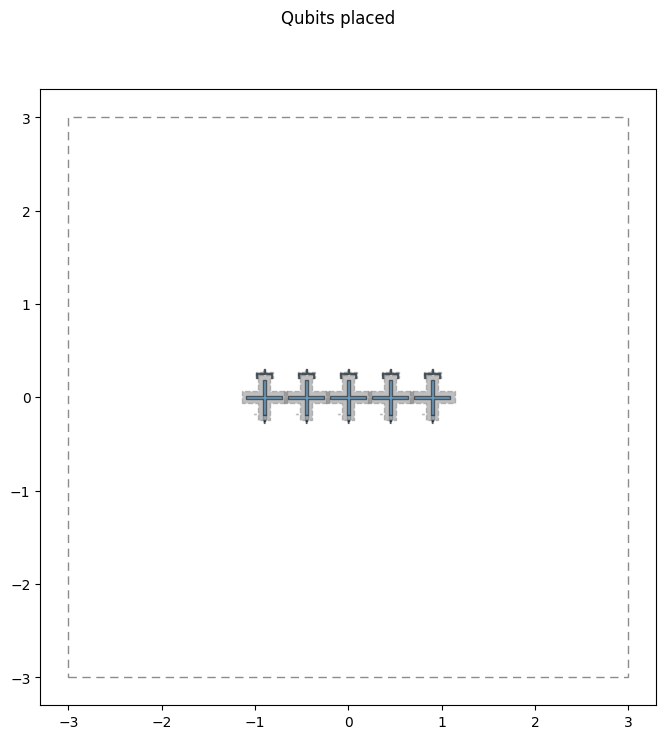
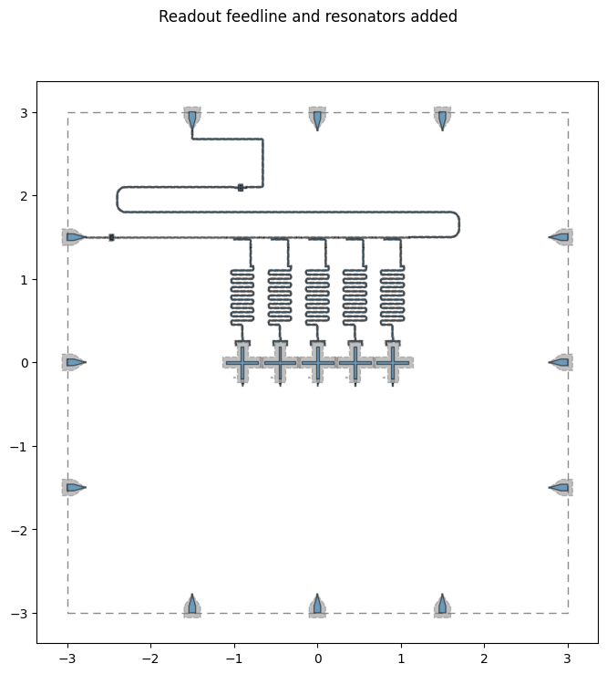
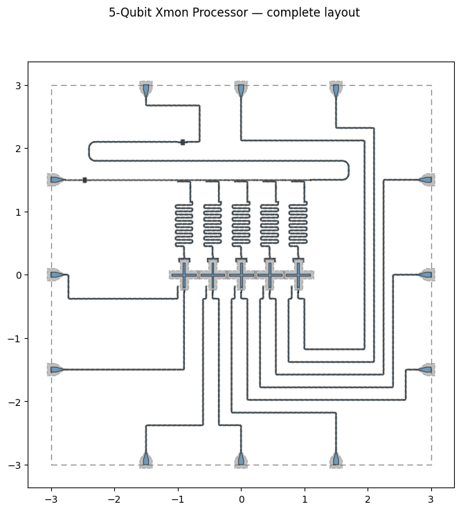

Note
This page was generated from circuit-examples/F.Small-quantum-chips/52-Barends_5Qubit_Xmon_Processor.ipynb.
5-Qubit Xmon Processor (Barends et al., 2014)¶


💡 Running in Colab or Binder? Uncomment the install cell below.
Reproduces the architecture of the 5-qubit linear Xmon processor from Barends et al., “Superconducting quantum circuits at the surface code threshold for fault tolerance”, Nature 508, 500–503 (2014) — the device that demonstrated single- and two-qubit gate fidelities above the surface-code fault-tolerance threshold, built by the team that shortly after formed Google Quantum AI. See also Barends et al., “Coherent Josephson Qubit Suitable for Scalable Quantum Integrated Circuits”, PRL 111, 080502 (2013), for the Xmon qubit design.
Five Xmon transmons in a 1-D chain, each with an individual meandered readout resonator, frequency-multiplexed onto a single feedline through a directional coupler per qubit; XY and Z control lines are routed to wirebond pads on all four chip edges.
Design adapted from the Quantum Device Workshop 2026 capstone-project solution, implemented by Murat Can Sarihan (Google Quantum AI). Component parameters and routing here are a physical-layout example inspired by the published device, not the fabricated chip’s actual mask.
[1]:
# In Colab / Binder, uncomment to install Quantum Metal (lite, no Qt).
# Locally you should already have it via `pip install quantum-metal` or
# `pip install 'quantum-metal[gui]'` for the desktop GUI.
# !pip install -q quantum-metal
💡 Using this tutorial without the Qt GUI
This notebook only uses the headless API (
qm.view) so it runs unmodified on Colab, Binder, JupyterHub, or any environment without Qt. See 1.1 Quick start for a complete runnable walkthrough and`docs/headless-usage.rst<https://qiskit-community.github.io/qiskit-metal/headless-usage.html>`__ for the full headless/GUI split.
1. Setup¶
[2]:
import os
os.environ.setdefault("QISKIT_METAL_HEADLESS", "True")
from qiskit_metal import designs, Dict
import qiskit_metal as qm
from qiskit_metal.qlibrary.qubits.transmon_cross_fl import TransmonCrossFL
from qiskit_metal.qlibrary.couplers.coupled_line_tee import CoupledLineTee
from qiskit_metal.qlibrary.tlines.meandered import RouteMeander
from qiskit_metal.qlibrary.terminations.launchpad_wb import LaunchpadWirebond
from qiskit_metal.qlibrary.terminations.open_to_ground import OpenToGround
from qiskit_metal.qlibrary.tlines.straight_path import RouteStraight
from qiskit_metal.qlibrary.tlines.framed_path import RouteFramed
from qiskit_metal.qlibrary.tlines.anchored_path import RouteAnchors
from qiskit_metal.qlibrary.lumped.cap_n_interdigital import CapNInterdigital
design = designs.DesignPlanar()
design.chips.main.size.size_x = "6.0mm"
design.chips.main.size.size_y = "6.0mm"
design.overwrite_enabled = True
print("Design initialized with a 6x6 mm substrate.")
Design initialized with a 6x6 mm substrate.
2. Place the five Xmon qubits (Q0–Q4)¶
Each TransmonCrossFL gets a flux line (south arm) and a readout connection pad (north arm); a hand-placed OpenToGround next to each qubit becomes the XY drive-line coupling point.
[3]:
qubit_pitch = 0.45 # mm
qubits, xy_pads = [], []
for i in range(5):
x_pos = (i - 2) * qubit_pitch
q = TransmonCrossFL(
design,
f"Q{i}",
options=dict(
pos_x=f"{x_pos}mm",
pos_y="0.0mm",
orientation="0",
cross_width="30um",
cross_length="190um",
cross_gap="50um",
make_fl=True,
fl_options=dict(
t_gap="3um",
t_inductive_gap="3um",
t_offset="0um",
t_top="15um",
t_width="5um",
),
connection_pads=dict(
readout=dict(
connector_type="0",
claw_length="40um",
ground_spacing="5um",
claw_width="10um",
claw_gap="6um",
connector_location="90",
)
),
),
)
qubits.append(q)
xy_pads.append(
OpenToGround(
design,
f"XY_pad_{i}",
options=dict(
pos_x=f"{x_pos - 0.1}mm",
pos_y="-0.18mm",
orientation="90",
width="10um",
gap="6um",
termination_gap="6um",
),
)
)
print("Placed qubits Q0-Q4 and their XY coupling pads.")
Placed qubits Q0-Q4 and their XY coupling pads.
[4]:
fig = qm.view(design)
fig.suptitle("Qubits placed")
fig
[4]:

3. Multiplexed readout feedline¶
A single feedline runs across the top of the chip. A CoupledLineTee directional coupler sits above each qubit, and CapNInterdigital components terminate the feedline’s input/output before it reaches the edge launchpads.
Each coupler’s second line is the coupling end of a readout resonator. open_termination=False shorts that end to ground; the other end is the open readout claw at the qubit, so each resonator is a quarter-wave (λ/4) resonator. With the coupler’s default, open_termination=True, both ends would be open and the fundamental would be a λ/2 mode at about twice the frequency.
[5]:
total_purcell_length_mm = 0 # tracked from the coupler taps onward
couplers = []
for i in range(5):
x_pos = (i - 2) * qubit_pitch
couplers.append(
CoupledLineTee(
design,
f"CLT{i}",
options=dict(
pos_x=f"{x_pos}mm",
pos_y="1.5mm",
orientation="0",
coupling_length="200um",
coupling_space="4um",
# Short the resonator end to ground: with the open claw at
# the qubit, each readout resonator is a quarter-wave.
open_termination=False,
),
)
)
total_purcell_length_mm += 0.2
# Wirebond launchpads, three per edge, 1.5 mm apart
LaunchpadWirebond(
design, "LP_W1", options=dict(pos_x="-2.8mm", pos_y="-1.5mm", orientation="0")
)
LaunchpadWirebond(
design, "LP_W2", options=dict(pos_x="-2.8mm", pos_y="0.0mm", orientation="0")
)
LaunchpadWirebond(
design, "LP_W3", options=dict(pos_x="-2.8mm", pos_y="1.5mm", orientation="0")
)
LaunchpadWirebond(
design, "LP_E1", options=dict(pos_x="2.8mm", pos_y="-1.5mm", orientation="180")
)
LaunchpadWirebond(
design, "LP_E2", options=dict(pos_x="2.8mm", pos_y="0.0mm", orientation="180")
)
LaunchpadWirebond(
design, "LP_E3", options=dict(pos_x="2.8mm", pos_y="1.5mm", orientation="180")
)
LaunchpadWirebond(
design, "LP_S1", options=dict(pos_x="-1.5mm", pos_y="-2.8mm", orientation="90")
)
LaunchpadWirebond(
design, "LP_S2", options=dict(pos_x="0.0mm", pos_y="-2.8mm", orientation="90")
)
LaunchpadWirebond(
design, "LP_S3", options=dict(pos_x="1.5mm", pos_y="-2.8mm", orientation="90")
)
LaunchpadWirebond(
design, "LP_N1", options=dict(pos_x="-1.5mm", pos_y="2.8mm", orientation="270")
)
LaunchpadWirebond(
design, "LP_N2", options=dict(pos_x="0.0mm", pos_y="2.8mm", orientation="270")
)
LaunchpadWirebond(
design, "LP_N3", options=dict(pos_x="1.5mm", pos_y="2.8mm", orientation="270")
)
cap_in = CapNInterdigital(
design, "Cap_input", options=dict(pos_x="-2.4mm", pos_y="1.5mm", orientation="270")
)
cap_out = CapNInterdigital(
design, "Cap_output", options=dict(pos_x="-1mm", pos_y="2.1mm", orientation="90")
)
print("Placed launchpads and feedline terminations.")
Placed launchpads and feedline terminations.
[6]:
RouteStraight(
design,
"Feed_in_lp",
options=dict(
pin_inputs=dict(
start_pin=dict(component="LP_W3", pin="tie"),
end_pin=dict(component="Cap_input", pin="south_end"),
)
),
)
purcell_left = RouteStraight(
design,
"Feed_in_clt",
options=dict(
pin_inputs=dict(
start_pin=dict(component="Cap_input", pin="north_end"),
end_pin=dict(component="CLT0", pin="prime_start"),
)
),
)
total_purcell_length_mm += purcell_left.length
for i in range(4):
feed_i = RouteStraight(
design,
f"Feed_mid_{i}",
options=dict(
pin_inputs=dict(
start_pin=dict(component=f"CLT{i}", pin="prime_end"),
end_pin=dict(component=f"CLT{i + 1}", pin="prime_start"),
)
),
)
total_purcell_length_mm += feed_i.length
purcell_right = RouteAnchors(
design,
"Feed_out_clt",
options=dict(
pin_inputs=dict(
start_pin=dict(component="CLT4", pin="prime_end"),
end_pin=dict(component="Cap_output", pin="north_end"),
),
anchors=Dict({0: (1.7, 1.5), 1: (1.7, 1.8), 2: (-2.4, 1.8)}),
fillet="100um",
advanced=Dict(avoid_collision=False),
),
)
total_purcell_length_mm += purcell_right.length
RouteAnchors(
design,
"Feed_out_lp",
options=dict(
pin_inputs=dict(
start_pin=dict(component="Cap_output", pin="south_end"),
end_pin=dict(component="LP_N1", pin="tie"),
),
lead=Dict(start_straight="200um", end_straight="100um"),
fillet="20um",
advanced=Dict(avoid_collision=False),
),
)
print("Feedline routed.")
print(f"Total Purcell-filter feedline length: {total_purcell_length_mm:.3f} mm")
Feedline routed.
Total Purcell-filter feedline length: 9.028 mm
4. Staggered meander readout resonators¶
Each qubit’s resonator gets a different total length (4.41–4.57 mm in 0.04 mm steps) so all five readout tones land at distinct frequencies for frequency-domain multiplexing on the single feedline.
[7]:
resonator_lengths = ["4.41mm", "4.45mm", "4.49mm", "4.53mm", "4.57mm"]
for i in range(5):
RouteMeander(
design,
f"ReadoutRes{i}",
options=dict(
pin_inputs=dict(
start_pin=dict(component=f"Q{i}", pin="readout"),
end_pin=dict(component=f"CLT{i}", pin="second_end"),
),
total_length=resonator_lengths[i],
fillet="20um",
lead=dict(start_straight="150um", end_straight="150um"),
meander=dict(spacing="50um", asymmetry="0um"),
),
)
print("Staggered meander resonators routed.")
05:00PM 51s WARNING [check_lengths]: For path table, component=ReadoutRes0, key=trace has short segments that could cause issues with fillet. Values in (29-30) are index(es) in shapely geometry.
05:00PM 51s WARNING [check_lengths]: For path table, component=ReadoutRes0, key=cut has short segments that could cause issues with fillet. Values in (29-30) are index(es) in shapely geometry.
05:00PM 51s WARNING [check_lengths]: For path table, component=ReadoutRes1, key=trace has short segments that could cause issues with fillet. Values in (29-30) are index(es) in shapely geometry.
05:00PM 51s WARNING [check_lengths]: For path table, component=ReadoutRes1, key=cut has short segments that could cause issues with fillet. Values in (29-30) are index(es) in shapely geometry.
05:00PM 51s WARNING [check_lengths]: For path table, component=ReadoutRes2, key=trace has short segments that could cause issues with fillet. Values in (29-30) are index(es) in shapely geometry.
05:00PM 51s WARNING [check_lengths]: For path table, component=ReadoutRes2, key=cut has short segments that could cause issues with fillet. Values in (29-30) are index(es) in shapely geometry.
05:00PM 51s WARNING [check_lengths]: For path table, component=ReadoutRes3, key=trace has short segments that could cause issues with fillet. Values in (29-30) are index(es) in shapely geometry.
05:00PM 51s WARNING [check_lengths]: For path table, component=ReadoutRes3, key=cut has short segments that could cause issues with fillet. Values in (29-30) are index(es) in shapely geometry.
05:00PM 51s WARNING [check_lengths]: For path table, component=ReadoutRes4, key=trace has short segments that could cause issues with fillet. Values in (29-30) are index(es) in shapely geometry.
05:00PM 51s WARNING [check_lengths]: For path table, component=ReadoutRes4, key=cut has short segments that could cause issues with fillet. Values in (29-30) are index(es) in shapely geometry.
Staggered meander resonators routed.
[8]:
fig = qm.view(design)
fig.suptitle("Readout feedline and resonators added")
fig
[8]:

5. XY and Z control-line routing¶
Every qubit’s XY (drive) and Z (flux) line is routed to its own edge launchpad with RouteFramed, using a short list of Manhattan jogs (start_jogged_extension) to dodge the qubits and feedline already on the chip.
[9]:
control_routes = [
("XY_pad_0", "open", "LP_W2", "tie", "XY_Line_0", Dict({})),
("Q0", "flux_line", "LP_W1", "tie", "Z_Line_0", Dict({})),
(
"XY_pad_1",
"open",
"LP_S1",
"tie",
"XY_Line_1",
Dict({0: ["R", "50um"], 1: ["L", "2000um"], 2: ["R", "200um"]}),
),
(
"Q1",
"flux_line",
"LP_S2",
"tie",
"Z_Line_1",
Dict({0: ["L", "100um"], 1: ["R", "2000um"], 2: ["L", "200um"]}),
),
(
"XY_pad_2",
"open",
"LP_S3",
"tie",
"XY_Line_2",
Dict({0: ["R", "50um"], 1: ["L", "1800um"], 2: ["L", "500um"]}),
),
(
"Q2",
"flux_line",
"LP_E1",
"tie",
"Z_Line_2",
Dict(
{
0: ["L", "100um"],
1: ["R", "1600um"],
2: ["L", "2500um"],
3: ["L", "100um"],
}
),
),
(
"XY_pad_3",
"open",
"LP_E2",
"tie",
"XY_Line_3",
Dict(
{
0: ["R", "50um"],
1: ["L", "1400um"],
2: ["L", "2100um"],
3: ["L", "1200um"],
}
),
),
(
"Q3",
"flux_line",
"LP_E3",
"tie",
"Z_Line_3",
Dict(
{
0: ["L", "100um"],
1: ["R", "1200um"],
2: ["L", "1700um"],
3: ["L", "800um"],
}
),
),
(
"XY_pad_4",
"open",
"LP_N3",
"tie",
"XY_Line_4",
Dict(
{
0: ["R", "50um"],
1: ["L", "1000um"],
2: ["L", "1350um"],
3: ["L", "3700um"],
4: ["L", "400um"],
}
),
),
(
"Q4",
"flux_line",
"LP_N2",
"tie",
"Z_Line_4",
Dict(
{
0: ["L", "100um"],
1: ["R", "800um"],
2: ["L", "950um"],
3: ["L", "3300um"],
4: ["L", "400um"],
}
),
),
]
for start_comp, start_pin, end_comp, end_pin, route_name, jogs in control_routes:
route_options = dict(
pin_inputs=dict(
start_pin=dict(component=start_comp, pin=start_pin),
end_pin=dict(component=end_comp, pin=end_pin),
),
lead=dict(
start_straight="100um", end_straight="50um", start_jogged_extension=jogs
),
fillet="20um",
step_size="0.05mm",
)
if "XY" in route_name:
route_options["lead"]["start_straight"] = "200um"
RouteFramed(design, route_name, options=route_options)
print("XY and Z control lines routed.")
print(f"Total components: {len(design.components)}")
XY and Z control lines routed.
Total components: 52
6. Completed layout¶
[10]:
fig = qm.view(design)
fig.suptitle("5-Qubit Xmon Processor — complete layout")
fig
[10]:

7. Export to GDSII¶
[11]:
import logging
import tempfile
from pathlib import Path
out = Path(tempfile.gettempdir()) / "barends_5qubit_processor.gds"
gds_renderer = design.renderers.gds
gds_renderer.options.short_segments_to_not_fillet = "False"
# The renderer logs notes on cheesing, and that no junction GDS file is set
# (options.path_filename defaults to None, so the junctions are left out of
# the mask); show errors only while exporting.
level = qm.logger.level
qm.logger.setLevel(logging.ERROR)
try:
gds_renderer.export_to_gds(str(out))
finally:
qm.logger.setLevel(level)
print(f"Layout exported to GDSII: {out.name}")
Layout exported to GDSII: barends_5qubit_processor.gds
References¶
Barends, R. et al. Coherent Josephson Qubit Suitable for Scalable Quantum Integrated Circuits. Phys. Rev. Lett. 111, 080502 (2013).
Barends, R. et al. Superconducting quantum circuits at the surface code threshold for fault tolerance. Nature 508, 500–503 (2014).
Sarihan, M. C. Capstone-project solution, Quantum Device Workshop 2026.
For more information, review the Introduction to Quantum Computing and Quantum Hardware lectures below
|
Lecture Video | Lecture Notes | Lab |
|
Lecture Video | Lecture Notes | Lab |
|
Lecture Video | Lecture Notes | Lab |
|
Lecture Video | Lecture Notes | Lab |
|
Lecture Video | Lecture Notes | Lab |
|
Lecture Video | Lecture Notes | Lab |